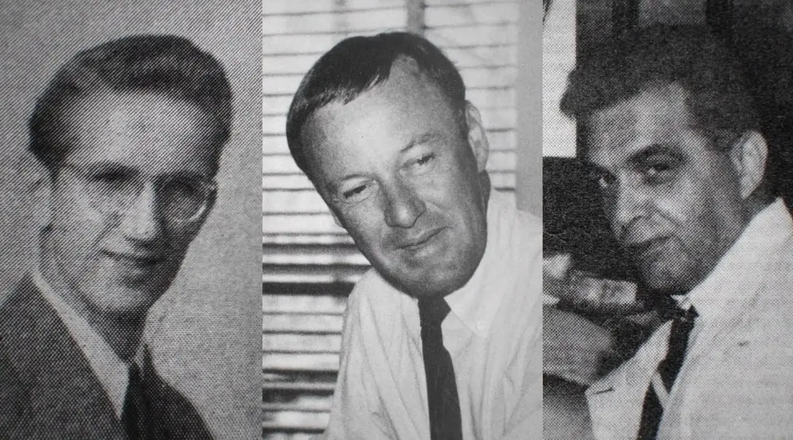
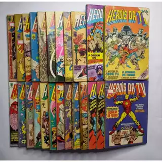
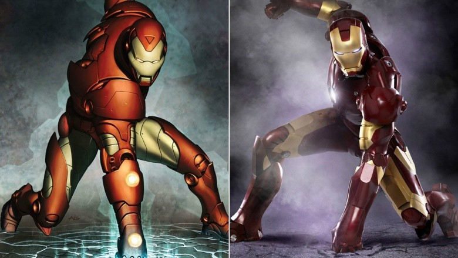

1939 — Marvel Comics #1
Primeira publicação foi androide, Namor e outros personagens, a qual para época obteve grande sucesso de vendas. Tocha humana na primeira HQ era um androide em sua forma orignial.
Desenhos Animados:
Fora dos quadrinhos, a Marvel investiu cedo em outros meios. Nos anos 1960 e 70, surgiram os primeiros desenhos animados, como o clássico Homem-Aranha de 1967, com sua abertura icônica (“Spider-Man, Spider-Man…”). A empresa também experimentou séries live-action, como O Incrível Hulk de 1978, estrelada por Lou Ferrigno, que se tornou um grande sucesso da televisão mundial. Mesmo com orçamento limitado, a série ajudou a apresentar o nome Marvel para um público totalmente novo.
Anos 60 — A reinvenção:
Stan Lee, Jack Kirby e Steve Ditko são os criadores mais influentes da Marvel nos anos 60, Jack Kirby e Steve Ditko criaram heróis com problemas humanos e continuidade — a fórmula que explodiu a popularidade.
Jogos e Séries:
Um dos fatores que ajudaram a Marvel a se reerguer foi sua entrada agressiva no mundo dos videogames, especialmente com jogos de luta como Marvel vs. Capcom, que levaram seus personagens a outro patamar de popularidade. Outro marco importante foi a criação da Marvel Studios e a compra da Marvel pela Disney em 2009 foi a virada definitiva que consolidou a empresa como potência global, surgindo diversas séries de personagens do MCU.
Curiosidades:
- Hulk foi planejado como cinza originalmente.
- Pantera Negra foi um dos primeiros heróis negros nas grandes editoras.
- Stan Lee fez breve aparições em quase todos os filmes do MCU até 2019.
- Marvel já teve várias crises financeiras (anos 90) antes de renascer pelo cinema.
- O conceito de 'universo compartilhado' foi refinado na Marvel dos anos 60 e expandido nas décadas seguintes.
Linha do tempo simplificada:
- 1939: Timely/Marvel Comics #1.
- 1961-1966: Era de ouro da reinvenção (X-Men, Spider-Man, Avengers).
- 2008: Lançamento de Iron Man, início do MCU.
- 2019: Avengers: Endgame — ápice de uma década de construções interligadas.